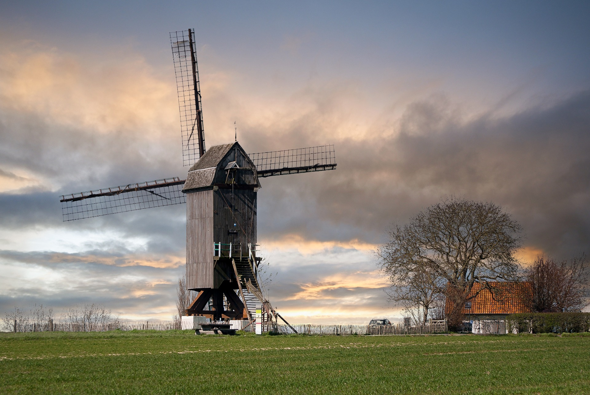
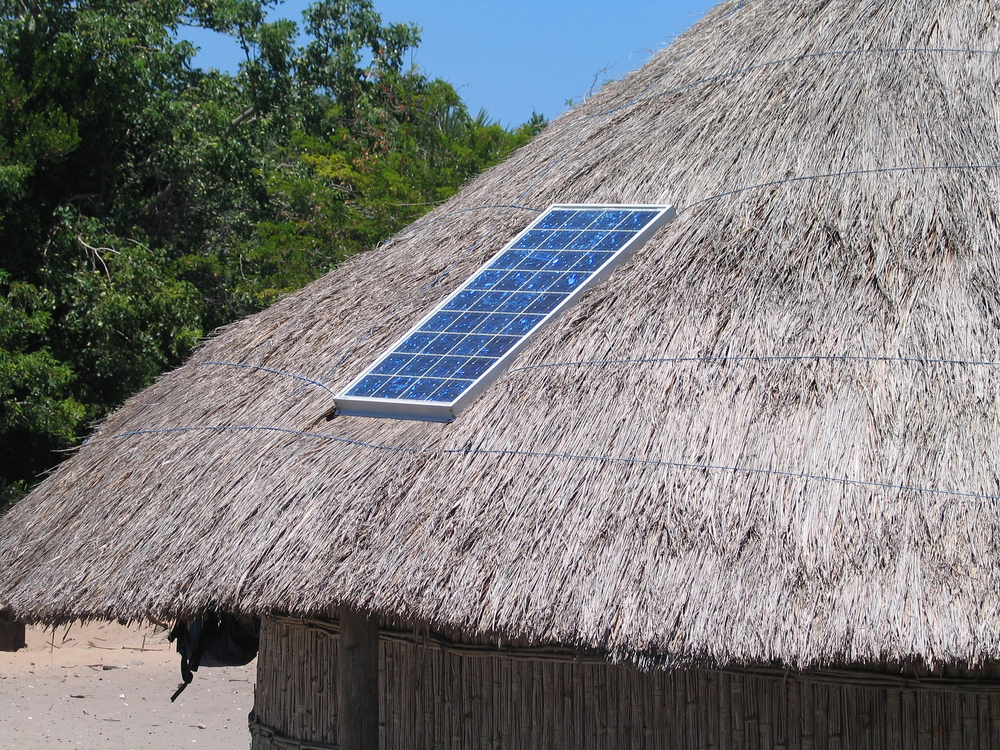

Garantir acesso à energia barata, confiável, sustentável e renovável para todos
Introdução
Para a atividade integradora do 1º bimestre, o grupo, que consiste nos alunos
Cauê Ribeiro, Daniela Ludwig, Denny Junio, Felipe Renó e Heloisa Sguarezi, reuniu
informações sobre os 17 Objetivos de Desenvolvimento Sustentável (ODS) da Organização das Nações
Unidas (ONU), com enfoque no 7º ODS, Energia Limpa e Sustentável.

ODM
Em 2000 a ONU com o apoio de 191 nações estabeleceram as metas do milênio que ficaram
conhecidas como Objetivos de Desenvolvimento do Milênio (ODM). Com bons resultados em 2012
ocorreu a Conferência das Nações Unidas sobre Desenvolvimento Sustentável, a Rio+20,
realizada na cidade de Rio de Janeiro tendo como principal objetivo renovar o compromisso
político com o desenvolvimento sustentável, possuindo como temas: economia verde no contexto
do desenvolvimento sustentável e da erradicação da pobreza e estrutura institucional para o
desenvolvimento sustentável.
ODS
No ano de 2016 surgiram os 17 Objetivos do Desenvolvimento Sustentável (ODS) proposta pela
ONU para os líderes mundiais, seus principais temas vão desde a preocupação com a saúde até
as mudanças climáticas.
Tema 7ºODS
O 7° ODS visa estabelecer a diminuição de fontes de energia poluentes e substituí-las por
opções mais sustentáveis, seja em energia elétrica ou na produção de combustíveis
automotivos.
Problematica
Como a utilização de meios de produção de energia não sustentáveis impactam o planeta, seja
o clima ou todo um ecossistema. Portando o 7 ODS tem o objetivo de conscientização buscando
a produção e meios de adquirir formas mais ecologicamente sustentáveis de obter energia além
de tornar o acesso a essa forma de energia mais acessível e segura a todos.
Justificativa
A ODS 7 procura acessos alternativos à utilização da energia, tendo como maior preocupação a
escolha de fontes mais sustentáveis que não impactam negativamente o meio ambiente, com a
energia sendo fundamental na vida cotidiana além de essencial para produção industrial
global se torna um assunto pertinente a ser desenvolvido.

Card title
Some quick example text to build on the card title and make up the bulk of the card's content.